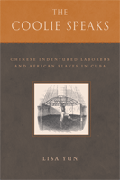

<body bgcolor="#FFFFFF" text="#000000" link="#0000FF" vlink="#CC0000" alink="#CC0000"><center><hr width="350" size="1" align="center" noshade>A remarkable examination of bondage in Cuba that probes questions of slavery, freedom, and race<hr width="350" size="1" align="center" noshade><p><a href="https://cdcshoppingcart.uchicago.edu/Cart/ChicagoBook.aspx?ISBN=9781592135813&&PRESS=temple" target="_top">Buy this book!</a> | <a href="https://cdcshoppingcart.uchicago.edu/Cart/Cart.aspx?PRESS=temple" target="_top">View Cart</a> | <a href="https://cdcshoppingcart.uchicago.edu/Cart/Cart.aspx?PRESS=temple" target="_top">Check Out</a></p><p></p></center><!--none//--><h1>The Coolie Speaks</h1>
<H2>Chinese Indentured Laborers and African Slaves in Cuba</H2>
<h3>Lisa Yun</h3>
<P>cloth 1592135811 $60.50, Feb 08, <FONT COLOR=#990033>Available</FONT>
<br>paper 159213582X $30.95, <FONT COLOR=#990033>Available</FONT>
<br>Electronic Book 1592135838 $30.95 <FONT COLOR=#990033>Available</FONT>
<BR> 336 pp
6x9
6&nbsp;tables 3&nbsp;figures 1&nbsp;halftone
</P><h3 align="center"><P><font color="#996633">Outstanding Academic Title, Choice,
2008</font></P>
</H3>
<BLOCKQUOTE><I>"Beautifully written,</i> The Coolie Speaks<i> offers a moving testament to the responsibility of scholars in the recovery of lives. The book makes significant interventions in the literatures of African slavery and Asian indentured labor, and it stakes and charts new territory across the disciplines of history and literary criticism.</i></i>"<br>&#151<b>Gary Y. Okihiro</b>, Professor of International and Public Affairs, Columbia University</I></BLOCKQUOTE>
<p>Introducing radical counter-visions of race and slavery, and probing the legal and philosophical questions raised by indenture, <i>The Coolie Speaks</i> offers the first critical reading of a massive testimony case from Cuba in 1874. From this case, Yun traces the emergence of a "coolie narrative" that forms a counterpart to the "slave narrative." The written and oral testimonies of nearly 3,000 Chinese laborers in Cuba, who toiled alongside African slaves, offer a rare glimpse into the nature of bondage and the tortuous transition to freedom. Trapped in one of the last standing systems of slavery in the Americas, the Chinese described their hopes and struggles, and their unrelenting quest for freedom.
<p>
Yun argues that the testimonies from this case suggest radical critiques of the "contract" institution, the basis for free modern society. The example of Cuba, she suggests, constitutes the early experiment and forerunner of new contract slavery, in which the contract itself, taken to its extreme, was wielded as a most potent form of enslavement and complicity. Yun further considers the communal biography of a next-generation Afro-Chinese Cuban author and raises timely theoretical questions regarding race, diaspora, transnationalism, and globalization.
<BR>&nbsp;<h2>Excerpt</h2><P>Excerpt available at <a href="http://www.temple.edu/tempress">www.temple.edu/tempress</a></p>
<BR>&nbsp;<h2>Reviews</h2>
<p><i>�The individual testimonies�are stunning in their particularity and personality. Some use Chinese historic and poetic allusions in sophisticated ways, some are quite simple, and all are anguishing�.[T]he author is to be commended.�</i> <br>&#151;<b><i>Library Journal</i></b>
<p><i>�[L]ittle critical attention has been paid to one of the most important testimonials in Latin American history: </i>The Cuba Commission Report<i>. Lisa Yun�s timely and well-written book is undoubtedly the most complete study to date on this jewel for the study of race relations, labor migration, and the international division of labor. Her outstanding analysis of the testimonial is complemented with other testimonies related to the so-called coolie trade in Cuba. In this sense, the book rescues from oblivion the abuses committed against southern Chinese indentured laborers� </i>The Coolie Speaks<i> is of interest not only for Chinese diaspora studies but also for Latin American, Caribbean, and Pan-African studies and literary criticism. This book is bound to become a seminal work for the study of the Chinese presence in the Americas.�</i> <br>&#151;<b><i>The Colonial Latin American Historical Review</i></b>
<p><i>�In this exceptional study, Yun uniquely compares the original depositions in Chinese with the translated versions and meticulously explores the fascinating, complex world views of this element of the population. She superbly contextualizes the heterogeneous world of contract labor involving Africans, Indians, and Chinese around the world. This examination...represents an enormously significant contribution to the field. Summing Up: Highly recommended.�</i> <br>&#151;<b><i>Choice</i></b>
<p><i>�</i>[The Coolie Speaks]<i> offers a thorough interpretation of the intersection of Asian, African, Latin American, Caribbean, and North American racial and economic philosophies within the context of slavery in nineteenth-century Cuba. Its extraordinary examination of bondage in Cuba also probes questions of slavery, freedom, and race by focusing on an often-neglected dimension of Latin American historiography.... [It] provides a thorough and innovative interpretation of an important element within Latin American society.�</i> <br>&#151;<b><i>HISTORY: Review of New Books</i></b>
<p><i>�</i>[The Coolie Speaks]<i> is a fascinating and thought provoking interdisciplinary work, which relates several areas of Asian, African, Caribbean, Latin American, and American Studies.�</i> <br>&#151;<b><i>The Afro-Hispanic Review</i></b>
<p><i>"Yun has made an important contribution to the history of the Coolies in Cuba and by looking at their relationship with the African slaves, she has provided us with a fresh approach to the history of repression, resistance and solidarity of nineteenth-century Cuba." </i> <br>&#151;<b><i>E-misferica</i></b>
<p><i>"</i>The Coolie Speaks<i> is a remarkable interdisciplinary text that explores the historical, literary, and philosophical implications of Chinese indentured labor in nineteenth-century Cuba."</i> <br>&#151;<b><i>The Journal of Colonialism and Colonial History</i></b>
<p><i>"</i>The Coolie Speaks<i> will bring tears to your eyes.... Lisa Yun has mined an incredible and rare source that allows us to hear the coolies in their own words." </i><br>&#151;<b><i>Labor</i></b>
<p><i>"</i>The Coolie Speaks<i> succeeds in conveying the poignant and often anguished nature of the testimonies themselves.... Through critical analysis of such an extensive amount of original testimonies, [Yun] has made an important contribution to our understanding of the nature of Asian indentured labor in the Americas."</i>
<br>&#151;<b><i>The Journal of American Ethnic History </i></b>
<p><i>"This long awaited book, about ten years in the making, is not a disappointment. In fact, it would not be an exaggeration to say this study is a tour de force of original, interdisciplinary scholarship and innovative methodology, not only on the part of Prof. Yun, but also, as she carefully explains, an example of the possibilities of collaborative work across many academic fields of expertise, language and cultural knowledge." </i> <br>&#151;<b><i>The Journal of Chinese Overseas</i></b>
<p><i>"The book begins with an impressive contextualization of the movement of coolie labor across the Pacific, by far the most detailed analysis at hand. The core of Yun�s book, however, is an examination of the coolie testimonies themselves.... This is a major addition to our understanding of the subjectivity of subaltern peoples and of the power relations in which subaltern texts are embedded. It should be obligatory reading for historians working in many fields�Latin American and Caribbean history, most obviously, but also the politics of testimonial production in general." </i> <br>&#151;<b><i>The American Historical Review</i></b>
<p><i>"[A]n extraordinary exemplar of scholarship that examines the under-investigated and often misunderstood phenomenon of Chinese coolie servitude in Cuba.... This book makes a significant contribution through its unique revision regarding the diaspora of transnational subjects whose lived realities were for too long obscured by the received wisdom of global structures of labor control, racialized hierarchies of power and misconstrued philosophical notions of the contract." </i> <br>&#151;<b><i>Estudios Interdisciplinarios de America Latina y el Caribe</i></b>
<p><i>"In this compelling study that will force readers to rethink the distinction between free and unfree migrations and the nature of the contract, Lisa Yun uncovers some of the 'voices' of the tens of thousands of Chinese indentured laborers brought to Cuba in the nineteenth century.... </i>The Coolie Speaks<i> will be foundational for any scholar interested in the question of indentured laborers as a transition from a slave to free economy and the nature of the contract." </i> <br>&#151;<b><i>The Journal of Law and History Review</i></b>
<p><i>"</i>The Coolie Speaks<i> is a detailed and fresh history of Cuba�s use of Chinese indentured servants in the years 1847�1878.... Yun�s evidence of coolies� virtual enslavement is compelling.... </i>The Coolie Speaks<i> is an innovative addition to histories of slavery and freedom in the Americas. Yun places both Asian labourers and Cuba squarely into a growing body of scholarship, typically focused on North America and the British Caribbean, interrogating the reality behind ideals of individual freedom and consensual labour relations. Her interdisciplinary approach combines history, law, philosophy, and literary theory and draws upon impressively broad swaths of material to contextualize her analysis. "</i> <br>&#151;<b><i>Continuity and Change</i></b>
<p><i>"[Yun] has opened up a horrific oyster shell embedded in the reefs of the slave trade.... Yet the power and striking originality of </i>The Coolie Speaks<i> lies less in its message than in its harsh but elegant dialectic of recovery and storytelling.... </i>The Coolie Speaks<i> is a breakthrough of scholarship. It provides a new map not just of the Atlantic slave trade, Chinese diaspora, and modern capitalism, but of scholarly means to articulate the words, places, and stories that tumble outward from the violent and fractured history of modernity. Like Toni Morrison�s </i>Beloved<i>, </i>The Coolie Speaks<i> seems to find a root language to remember and memorialize human suffering and agency, while teaching us again as scholars and citizens of the world to listen carefully to the cries, whispers, and exhortations of the past." </i><br>&#151;<b> <i>Callaloo</i></b>
<p><i>"It is difficult to capture in this short review the many strengths of Yun�s perceptive discussion of this migration.... [I]t is clear that Lisa Yun�s learned discussion of the suppressed history of the Chinese in nineteenth-century Cuba, bringing to the surface their own views on the indenture experience, will become as standard a reference work on this subject as the Report of 1876 itself was in its own time. We look forward to the promised translations of the complete body of testimonies." </i> <br>&#151;<b><i>The New West Indian Guide</i></b>
<p><i>"[Yun] produces a fascinating, elegantly written, and careful analysis of thousands of depositions and petitions collected during an 1874 Chinese government fact-finding mission to Cuba (at the height of the anticolonial Ten Years� War) to investigate the work and life conditions of Chinese coolies and intervene on their behalf.... [O]ne of the book�s greatest scholarly contributions is that it challenges a monolithic historiographical portrayal of the Cuban body politic....[T]his interdisciplinary work of history and literary criticism is a highly readable, critical scholarly innovation for studies of race, labor regimes and violence, immigration, and Asian diaspora experience in Cuba and the Americas."</i> <br>&#151;<b><i>Hispanic American Historical Review</i></b>
<p><i>"Yun provides a worthy examination of the lives of Asian immigrant laborers during the last half of the nineteenth century.... [A] solid addition to the historiography of Chinese laborers in Cuba.... Yun's book is essential for graduate students and scholars who study race, ethnicity, labor, and immigration in Latin America and the Caribbean."</i> <br>&#151;<b><i>The Journal of World History</i></b>
<BR>&nbsp;<h2>Contents</h2><P>
<p>Acknowledgements
<br>Introduction: Challenges of a Transitional History
<p><b>1. Historical Context of Coolie Traffic to the Americas</b>
<br>The Narrative of Transition
<br>The Early Experiments
<br>Chinese and Indian Coolie Labor
<br>Chinese Coolies and �Tea with Sugar�
<br>Coolies on Ships and the Passage
<br>Coolies on American Ships
<br>Coolies on Land
<p><b>2. The Coolie Testimonies</b>
<br>The Commission Investigation
<br>Methodological Challenges of Reading Testimonies
<br>Coolie Testimonies and African Slave Narratives
<br>Who Were the Coolies?
<p><b>3. The Petitions</b>
<br>The Witness Petition
<br>The Verse Petition
<br>The Argument Petition
<br>Philosophical Prelude
<br>Chasing Freedom
<br>Slaves of the Market
<br>The Paper Chase Petition
<p><b>4. The Depositions</b>
<br>Race, Resistance, and Spectacular Subordination
<br>The Peculiar Fatality of Color
<br>Struggle Before Solidarity
<br>The Cost of Domination
<p><b>5. An Afro-Chinese Author and the Next Generation</b>
<br>The Subversive and the Translator
<br>The Motley Tongue
<br>Liberation, Solidarity, and �Socio-political Adultery�
<br>Coolies and Californians
<p>Conclusion: Old and New Maps of Coolies
<br>Sources
<br>Notes
</P><BR>&nbsp;<H2>About the Author(s)</H2>
<P><b>Lisa Yun</b> is Associate Professor of English and Asian/Asian American Studies at Binghamton University.</P>
<BR><H2>Subject Categories</H2>
<p><A HREF="/tempress/asian_amer.html" TARGET="_top">Asian American Studies</a>
<BR><A HREF="/tempress/latin.html" TARGET="_top">Latin American/Caribbean Studies</a>
<BR><A HREF="/tempress/literature.html" TARGET="_top">Literature and Drama</a>
</p>
<BR><h2 class="inpageheading">In the series</H2>
<P><I><a href="http://www.temple.edu/tempress/asam_history.html" onMouseOver="window.status='Click for other books in this series!'; return true;" onMouseOut="window.status=''; return true;" target="_top">Asian American History and Culture</a></i>, edited by K. Scott Wong, Linda Trinh V�, and Cathy Schlund-Vials.
</p><p>Founded by Sucheng Chan in 1991, the <I>Asian American History and Culture</I>, series has sponsored innovative scholarship that has redefined, expanded, and advanced the field of Asian American studies while strengthening its links to related areas of scholarly inquiry and engaged critique. Like the field from which it emerged, the series remains rooted in the social sciences and humanities, encompassing multiple regions, formations, communities, and identities. Extending the vision of founding editor Sucheng Chan and emeriti editor Michael Omi and David Palumbo-Liu, series editors K. Scott Wong, Linda Trinh V�, and Cathy Schlund-Vials continue to develop a foundational collection that embodies a range of theoretical and methodological approaches to Asian American studies.</p>
<p align="center"><a href="https://cdcshoppingcart.uchicago.edu/Cart/ChicagoBook.aspx?ISBN=9781592135813&&PRESS=temple" target="_top">Buy this book!</a> | <a href="https://cdcshoppingcart.uchicago.edu/Cart/Cart.aspx?PRESS=temple" target="_top">View Cart</a> | <a href="https://cdcshoppingcart.uchicago.edu/Cart/Cart.aspx?PRESS=temple" target="_top">Check Out</a></p><p><font face="Arial" size="1"><a href="copyright.html" onMouseOver="window.status='Web Copyright Policy';return true;" onMouseOut="window.status=''" title="Web Copyright Policy">&copy;</a> 2015 <a href="http://www.temple.edu" target="new" onMouseOver="window.status='Link to Temple University home page';return true;" onMouseOut="window.status=''" title="Link to Temple University home page">Temple University</a>. All Rights Reserved. http://www.temple.edu/tempress/titles/1888_reg.html</font></p>